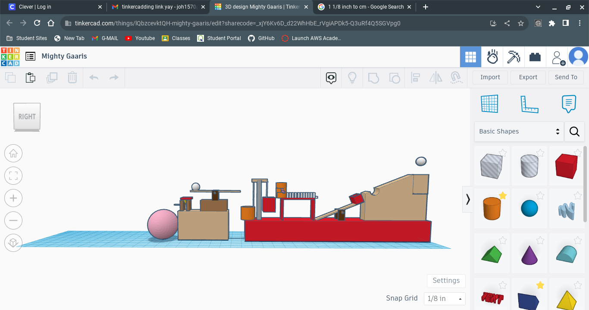
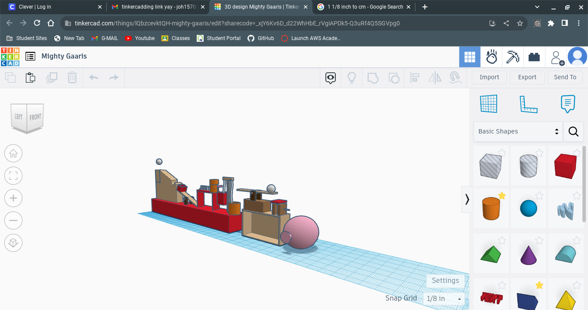

8/25/23 - I played video game with my friends, and I like to make website, learning how to make website in this class, because I love to making something and using computer.
I went site about video game. It has a descripition about their game, how to fix a problem, and download their game.
I am going to finish my plastic model in this weekend and play league of legend with my korean friends.
The challenge was difficult becasue I think our teamwork wasn't good.
A recipe of my favorite food kimchi jjigae.
9/1/23-This week, I learned about mechanical engineering and start of the engineering. Last week, we did challenge that move marble with a pipe by use teamwork. This week, I made electronic machine in the house by using CAD. We started a rube goldberg machine which make building with many system to pop a balloon by rolloing baseball. I like to make shape of them with CAD. It was cool.
9/8/23-This week, I learned about goldberg machine and they are so cool. My week going so quickly becasue there was no monday school.
We made a goldberg machine with group. Our goldberg machine will rolloing baseball from top of the hill and the baseball drop on the lever then other side of lever there is a ball and hit the domino by going up. the last domino hits the other ball and ball going into wedge. pulley carry it to wedge and by the wedge across two blocks and the right block hit the ballon with a sharp thing.
Our next challenge is how to make this with cardbord and it will work.


9/15/23-Last week, Our group finished goldberg machine with box. Our goal was pop a ballon, so we tried and tried but the two needle keep missing. First, a toy car rolling from top and hit the stick that going to drop, and the string from stick to one of side of seesaw. The seesaw touch the other seesaw which on the another box, then the shape that looks like capital L push down the wedge. when they fell the one of the side of the wedge there are needle. The needle pop the ballon.
I made seesaw and wedge. Our teammate divide our work. For example, if I make the support fixture, other teammate make the plate for seesaw.
If we make the things more better. I think, we could pop it, if I made my wedge better.
9/22/23-This week, we made drow "E" and set the length and width. I made the weird E which the length is shorter than front space. I also made floatation device with my teammate, we made paper ballon and make pence to make the things can't fell on the ballon, we dropped on the water, but the things fell through opened side, but the paper ballon was kept floated on the water.
On the E challenge, I could learn with out actual plan, I could make mistake, so we need actual plan for thing when I make something. On the floatation device, I could learn, You can make something with as few materials as possible.
I could learn about the computer engineering is design, build, and test hardware components and systems, and make software.